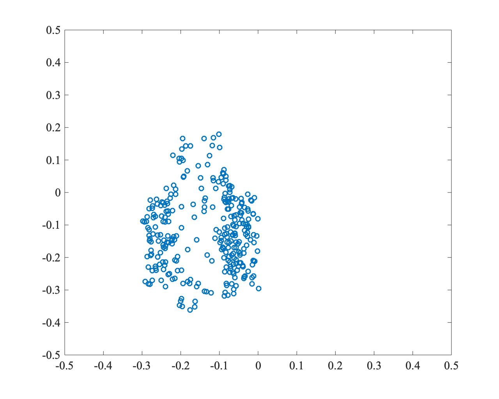
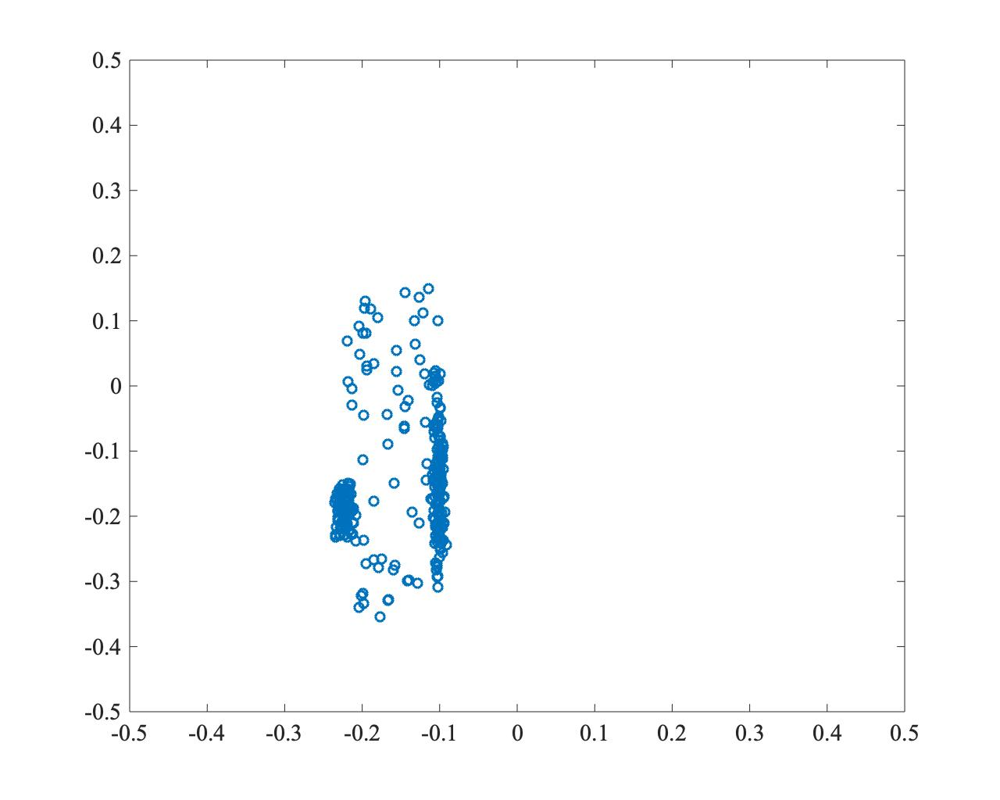
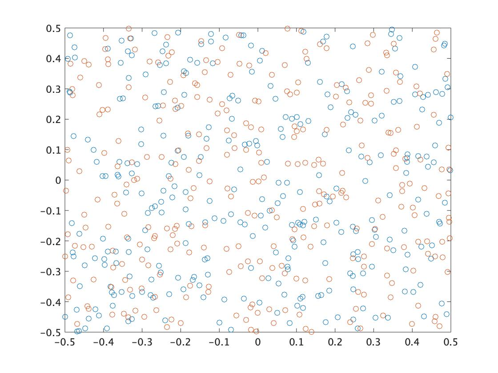
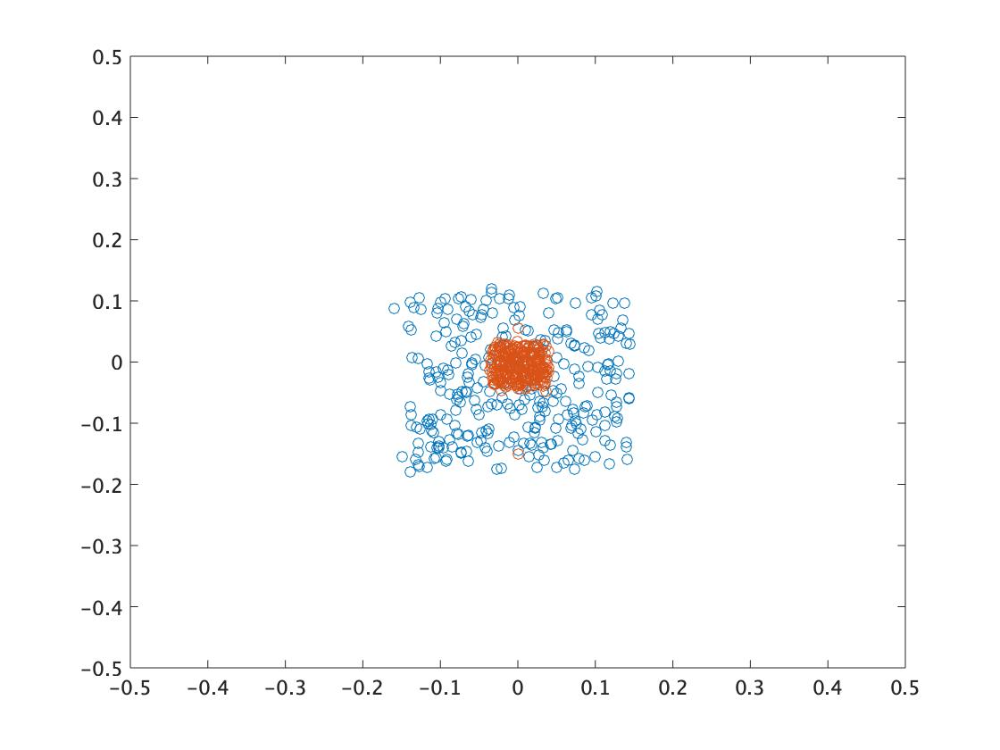
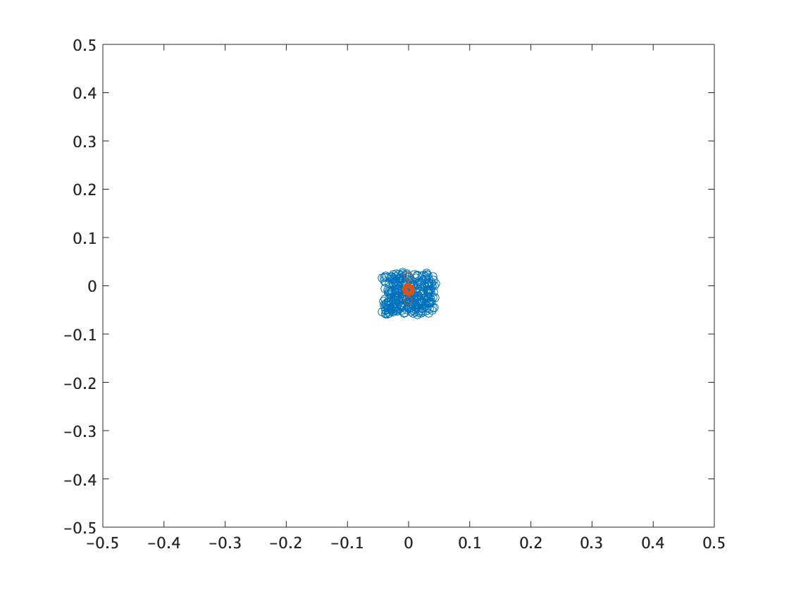

粒子群最適化 (PSO: Particle Swarm Optimization)
PSOは、鳥や魚の群れの行動を模倣した最適化アルゴリズムです。群れ全体で餌の場所などの情報を共有し、個々の個体が自己の経験と他者の経験に基づいて行動を調整することで、効率的に最適解を探索します。
PSOでは、「粒子」と呼ばれる探索エージェントが、位置と速度の情報を持って探索空間を飛び回ります。各粒子は、自身の過去最も良かった場所（pbest）と、群れ全体で最も良かった場所（gbest）の情報を頼りに、次の速度と位置を決定します。
粒子の更新則
粒子 $i$ の時刻 $t$ における位置を $x_i(t)$、速度を $v_i(t)$ とします。また、粒子 $i$ のこれまでの最良位置を $P_i(t)$、群れ全体の最良位置を $P_G(t)$ とすると、速度と位置は以下の式で更新されます。
$$ v_i(t+1) = w \cdot v_i(t) + C_1 r_1 (P_i(t) - x_i(t)) + C_2 r_2 (P_G(t) - x_i(t)) $$
$$ x_i(t+1) = x_i(t) + v_i(t+1) $$
- $w$: 慣性係数。現在の速度をどの程度維持するかを決定します。
- $C_1$: 認知係数。粒子自身の最良位置に向かう度合い。
- $C_2$: 社会的係数。群れ全体の最良位置に向かう度合い。
- $r_1, r_2$: [0, 1] の範囲の一様乱数。探索の多様性を生み出します。
更新の概念は以下の図のように表せます。

PSOの課題
PSOは実装が容易である一方、パラメータへの依存性が高く、特に群れ全体の最良位置 $P_G(t)$ に粒子が集中しすぎることで、局所解に陥りやすいという問題があります。探索の収束速度と多様性の維持のバランスを取ることが重要です。
以下は、PSOで最適解(0,0)を探索した例です。収束は速いものの、粒子が一点に集中し、局所解に陥っている様子がわかります。
- $t=0$

- $t=250$ 
- $t=500$ 
協調型二群粒子群最適化 (TCPSO: Two-swarm Cooperative PSO)
TCPSOは、PSOの収束速度と多様性の問題を改善するために提案された手法です。役割の異なる2つの粒子群、すなわち大域的な探索を行うマスター粒子群と、集中的な探索を行うスレーブ粒子群を用いる点に特徴があります。
粒子の更新則
-
スレーブ粒子群 (Slave Swarm) スレーブ粒子群は、慣性項 $w$ を持たず、群れ全体の最良位置 $P_G(t)$ に強く引き寄せられます。これにより、有望な領域を集中的に探索する役割を担います。 $$ v_i^S(t+1) = C_1^S r_1 (P_i^S(t) - x_i^S(t)) + C_2^S r_2 (P_G(t) - x_i^S(t)) $$ $$ x_i^S(t+1) = x_i^S(t) + v_i^S(t+1) $$

-
マスター粒子群 (Master Swarm) マスター粒子群は、スレーブ粒子群の最良位置 $P_G^S(t)$ の情報も利用します。これにより、スレーブ群が見つけた有望な領域を参考にしつつも、慣性項によって探索の多様性を維持し、大域的な探索を行います。 $$ v_i^M(t+1) = w^M v_i^M(t) + C_1^M r_1 (P_i^M(t) - x_i^M(t)) + C_2^M r_2 (P_G^S(t) - x_i^M(t)) + C_3^M r_3 (P_G(t) - x_i^M(t)) $$ $$ x_i^M(t+1) = x_i^M(t) + v_i^M(t+1) $$

TCPSOの性質
スレーブ群の高速な収束性と、マスター群の多様性維持能力を組み合わせることで、効率的な探索を実現します。しかし、問題が広範囲・高次元になると、マスター群も局所解に収束しやすくなるという課題は残ります。
以下はTCPSOの実行例です。オレンジがスレーブ粒子群、青がマスター粒子群です。スレーブ群が素早く有望な領域に収束し、マスター群がその周辺を多様性を保ちながら探索している様子がわかります。
- $t=0$ 
- $t=250$ 
- $t=500$ 
Matlabプログラム
PSO
% PSO パラメータ
ns = 300; % 粒子数
c1 = 1.0; % 認知係数
c2 = 1.0; % 社会的係数
w = 0.9; % 慣性係数
maxT = 500; % 最大繰り返し回数
D = 2; % 問題の次元
% STEP1: 初期粒子群の生成
ps = rand(ns, D) - 0.5; % 位置を[-0.5, 0.5]で初期化
ps_v = zeros(ns, D); % 速度を0で初期化
ps_fitness = zeros(ns, 1); % 評価値
ps_best_pos = ps; % 各粒子の最良位置 (pbest)
ps_best_fitness = zeros(ns, 1); % 各粒子の最良評価値
g_best_pos = zeros(1, D); % 群全体の最良位置 (gbest)
g_best_fitness = -inf; % 群全体の最良評価値
figure;
for t = 1:maxT
% STEP2: 評価値計算
% 評価関数: 1 / (abs(x) + abs(y)) (原点に近いほど高評価)
ps_fitness = 1 ./ (sum(abs(ps), 2) + 1e-9); % 0除算を避ける
% STEP3: 各粒子の最良位置の更新 (pbest)
update_indices = ps_fitness > ps_best_fitness;
ps_best_pos(update_indices, :) = ps(update_indices, :);
ps_best_fitness(update_indices) = ps_fitness(update_indices);
% STEP4: 全体の最良位置の更新 (gbest)
[current_max_fitness, max_idx] = max(ps_fitness);
if current_max_fitness > g_best_fitness
g_best_fitness = current_max_fitness;
g_best_pos = ps(max_idx, :);
end
% STEP5: 各粒子の速度と位置を更新
r1 = rand(ns, D);
r2 = rand(ns, D);
ps_v = w * ps_v + c1 * r1 .* (ps_best_pos - ps) + c2 * r2 .* (g_best_pos - ps);
ps = ps + ps_v;
% 途中経過のプロット
if mod(t, 50) == 0 || t == 1
plot(ps(:,1), ps(:,2), 'b.');
hold on;
plot(g_best_pos(1), g_best_pos(2), 'r*', 'MarkerSize', 10);
hold off;
xlim([-0.5 0.5]);
ylim([-0.5 0.5]);
title(['PSO at Iteration: ', num2str(t)]);
drawnow;
end
end
TCPSO
% TCPSO パラメータ
ns = 150; % スレーブ粒子数
nm = 150; % マスター粒子数
w = 0.9; % マスター群の慣性係数
c1s = 1.0; c2s = 1.0; % スレーブ群の係数
c1m = 1.0; c2m = 1.0; c3m = 1.0; % マスター群の係数
maxT = 500;
D = 2;
% STEP1: 初期粒子群の生成
% スレーブ群
sp = rand(ns, D) - 0.5;
sp_v = zeros(ns, D);
sp_fitness = zeros(ns, 1);
sp_best_pos = sp;
sp_best_fitness = zeros(ns, 1);
s_gbest_pos = zeros(1, D); % スレーブ群のgbest
s_gbest_fitness = -inf;
% マスター群
mp = rand(nm, D) - 0.5;
mp_v = zeros(nm, D);
mp_fitness = zeros(nm, 1);
mp_best_pos = mp;
mp_best_fitness = zeros(nm, 1);
% 全体
g_best_pos = zeros(1, D); % 全体のgbest
g_best_fitness = -inf;
figure;
for t = 1:maxT
% STEP2: 評価値計算
sp_fitness = 1 ./ (sum(abs(sp), 2) + 1e-9);
mp_fitness = 1 ./ (sum(abs(mp), 2) + 1e-9);
% STEP3: 各粒子の最良位置の更新 (pbest)
update_s = sp_fitness > sp_best_fitness;
sp_best_pos(update_s, :) = sp(update_s, :);
sp_best_fitness(update_s) = sp_fitness(update_s);
update_m = mp_fitness > mp_best_fitness;
mp_best_pos(update_m, :) = mp(update_m, :);
mp_best_fitness(update_m) = mp_fitness(update_m);
% STEP4: 全体の最良位置の更新
% スレーブ群のgbest
[s_current_max, s_max_idx] = max(sp_fitness);
if s_current_max > s_gbest_fitness
s_gbest_fitness = s_current_max;
s_gbest_pos = sp(s_max_idx, :);
end
% 全体のgbest
[m_current_max, m_max_idx] = max(mp_fitness);
if m_current_max > g_best_fitness
g_best_fitness = m_current_max;
g_best_pos = mp(m_max_idx, :);
end
if s_gbest_fitness > g_best_fitness
g_best_fitness = s_gbest_fitness;
g_best_pos = s_gbest_pos;
end
% STEP5: 各粒子の速度と位置を更新
% スレーブ群
r1s = rand(ns, D); r2s = rand(ns, D);
sp_v = c1s * r1s .* (sp_best_pos - sp) + c2s * r2s .* (g_best_pos - sp);
sp = sp + sp_v;
% マスター群
r1m = rand(nm, D); r2m = rand(nm, D); r3m = rand(nm, D);
mp_v = w * mp_v + c1m * r1m .* (mp_best_pos - mp) + c2m * r2m .* (s_gbest_pos - mp) + c3m * r3m .* (g_best_pos - mp);
mp = mp + mp_v;
% 途中経過のプロット
if mod(t, 50) == 0 || t == 1
plot(sp(:,1), sp(:,2), 'b.'); % スレーブ
hold on;
plot(mp(:,1), mp(:,2), 'g.'); % マスター
plot(g_best_pos(1), g_best_pos(2), 'r*', 'MarkerSize', 10);
hold off;
xlim([-0.5 0.5]);
ylim([-0.5 0.5]);
title(['TCPSO at Iteration: ', num2str(t)]);
legend('Slave', 'Master', 'Gbest');
drawnow;
end
end